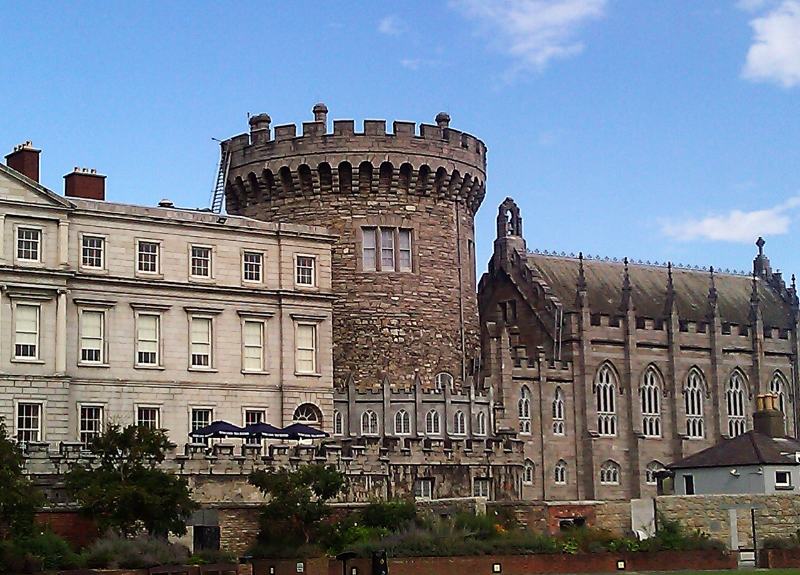
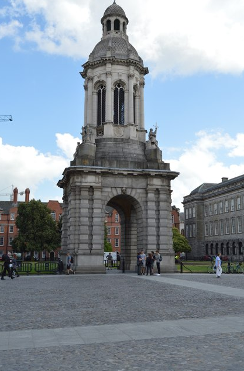
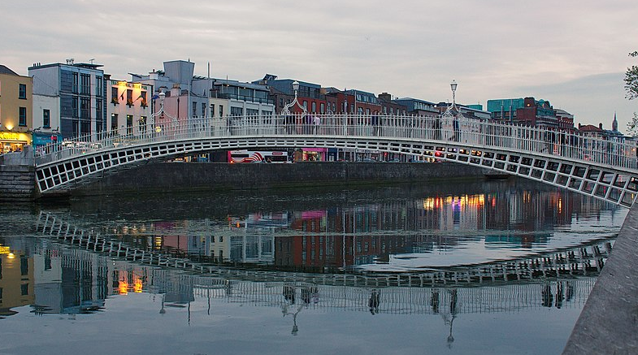

Dublin has gone through remarkable changes over the centuries and thus has a lot of history to offer tourists coming to the city. You can think of it as a town where the old and the new combine to create a solid foundation on which the future will thrive. A wise man once said that you could not build a future if you do not understand the past that led to your present. As such, it seems fit to go back to how this city began by visiting its landmarks.
The bus tour
If you wish to view the beautiful sights located in the city center, the best way to do so would be by bus. Here, you would have a guide point out the different attractions and their importance. The thing with this bus is that you can hop off at any point and catch a later one to the next destination. You can also use the south coast tour bus which will take you through Dalkey all the way to the Powerscourt home in the Wicklow Mountains. The north coast tour, on the other hand, brings you all the way to the Malahide Castle. You can catch both buses to get the most out of the guides.
The Dublin Castle
This structure lies in the heart of historic Dublin. It came about in 934 and withstood the test of the time as the Vikings and English battled it out in a bid to control Dublin. For over ten centuries, it has been and remains to be a testament of strength for this city. Visiting it is a great place to start the journey as to how Dublin came to be as well as crucial lessons as to the growth of Ireland.
The Dublin Zoo
This zoo came about in 1830 and remains to be the fourth oldest of its kind in all of Europe. It is in Phoenix Park and receives close to a million visitors in a year. Here, you get to view a large selection of animals enclosed in an area with breathtaking surroundings. Get to sharpen your knowledge regarding how humans affect animals and vice versa, as well as how you can aid in conservation efforts.
The Guinness Storehouse
If you enjoy beer, then this is your chance to see how it gets made. This storehouse lies in the Guinness brewery, and here, you get to go through a two and a half century journey as to how the brew is what it is today. You get to see the beer getting made as well as to sample it at their bar named the gravity bar. This bar is the highest bar you will ever get to visit in Ireland and on a clear day, you can enjoy an unobstructed view of the city.
Trinity College
Queen Elizabeth I takes credit for the founding of this institution which has educated the elite for centuries. If you were to get here without knowing it was a university, you would think it was a town. It comprises of grounds, a library, a cricket pitch as well as other features which add to its air of wealth.
The National Museum
This museum has branches across Dublin where you can get to view historical pieces. Gold ornaments such as the Ardagh Chalice as well as the Tara Brooch are here, and you can see their designs and bathe in their beauty.
The Dublinia
If you ever wanted to live in the middle ages, here is an excellent way to do so. This exhibition allows you to play games in a medieval fair, throw eggs at people locked up in stocks as well as go through wealthy merchants’ townhouses. The experience should have you feeling like you are in the medieval times. You also get to see what the conditions were like back then and you will have more appreciation for the present day.
Kilmainham Gaol
This prison will open your eyes to the kinds of sacrifices that people had to make for the Irish to enjoy the freedoms that they have today. It came to be in 1792 and got used in holding many Irish from the Society of United Irishmen as well as the leaders of the Easter Rising. Many people got executed, and the prison got closed in 1924. However, their brave stories did not die with them, and they live on, encouraging people to continue doing better and to guard that which these courageous people struggled to get.
Hugh Lane Gallery
An excellent way to end your trip would be by visiting by this gallery where you can admire several fascinating pieces. Works by Monet, Manet and Degas lie here as well as Irish art from the 19th all the way to the 21st century.
Dublin, like many cities across the world, has come a long way, owing to the efforts of brave people who risked all they had to give rise to a new beginning. It is only through visiting these landmarks that you can truly appreciate the beauty of Dublin's history.